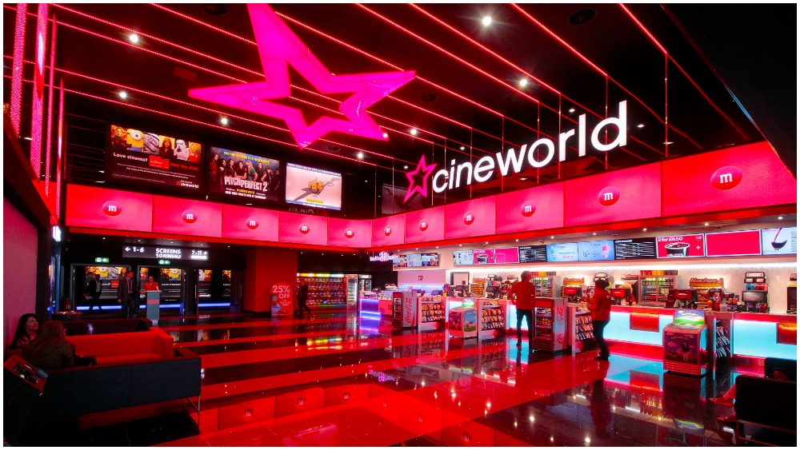
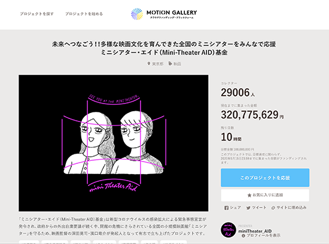
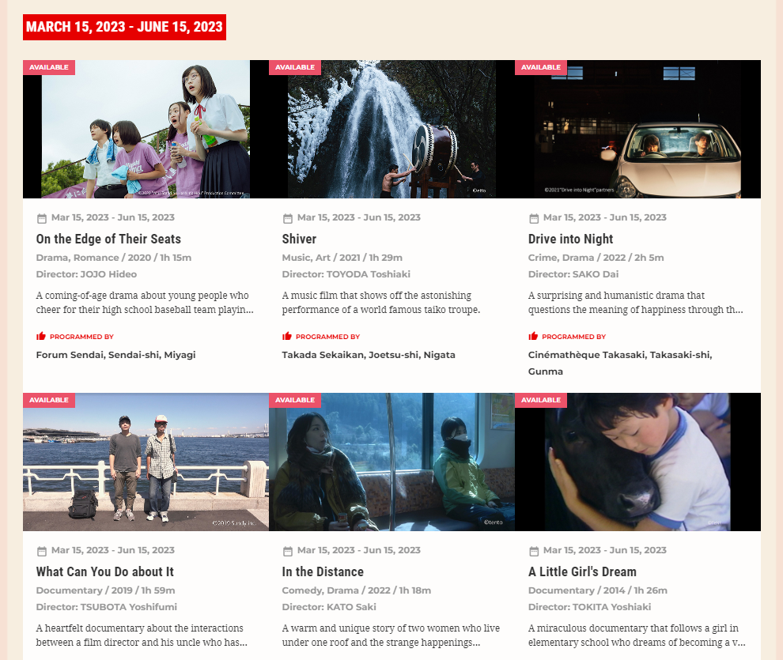
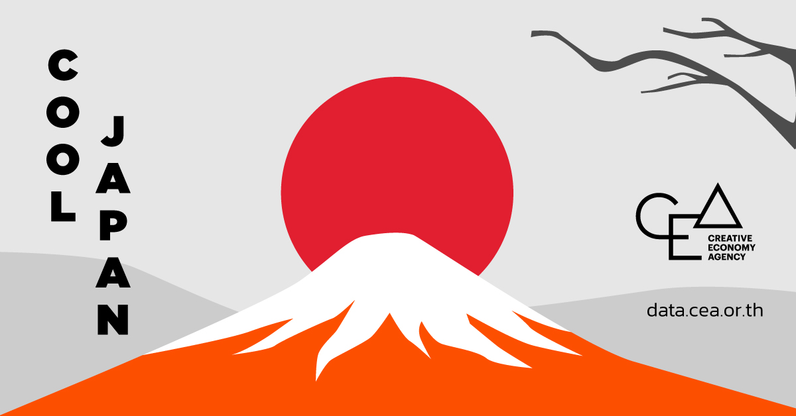

บทความนี้เผยแพร่เมื่อ 21 มีนาคม | อ่านตอนแรก

โควิด-19 นับว่าเป็นมรสุมลูกมหาศาลที่ซัดเข้าจนระบบโรงภาพยนตร์เสียศูนย์ไปพักหนึ่ง
‘Cineworld’ โรงภาพยนตร์ในสหรัฐที่ใหญ่เป็นอันดับ 2 ยื่นล้มละลาย
การเข้ามาของระบบ PVOD แบบเต็มรูปแบบในหลายประเทศ
การเข้ามารุกคืบของบริการสตรีมมิ่งในช่วงที่ผู้คนต้องอยู่แต่บ้าน ขนาดที่ค่ายใหญ่ยังลงมาเล่นด้วยชื่อสกุลค่ายพ่วงพลัส พ่วงแม็กซ์ อะไรก็ว่าไป
มินิ-เธียเตอร์เองก็ประสบปัญหาไม่แพ้กัน แต่หลังจากระลอกแรก ก็ยังคงยืนหยัดหยิบหนังเล็กๆ มาฉายให้ชมกับผู้ชมตามปกติ ไม่ว่าจะเป็น On-Gaku: Our Sound (2021), Come and Go (2021) จนในช่วงหลังๆ เราก็เห็น No Place to Go (2022) หรือแม้กระทั่ง “Small, Slow But Steady” (2022)
ส่วน Eurospace เองก็เผชิญกับปัญหาจากหลากหลายด้านเหตุผลที่ไม่ต่างกับรายอื่นๆ ไม่ว่าจะรายได้จากผู้ชมที่หดหาย “โควิดคือฟางเส้นสุดท้าย” ส่วนทางผู้เกี่ยวข้องและเคยมีเอี่ยวกับมินิเธียเตอร์ไม่ว่าจะเป็นโคเรเอดะ ที่ออกแคมเปญ Save the Cinema ที่เรียกร้องให้รัฐบาลและสภาญี่ปุ่นออกมาช่วยเหลืออุตสาหกรรม ขณะที่โคจิ ฟูกุดะและฮามากุจิก็ออกโครงการระดมทุน Mini Theatre Aid Fund ระดมทุนได้มากกว่า 330 ล้านเยน ซึ่งทั้งหมดมอบให้โรงภาพยนตร์ 118 โรงและกลุ่มที่เกี่ยวข้องอีก 103 กลุ่ม
โฮโจ มาซาโตะ ผู้จัดการของ Eurospace ยังกล่าวเกี่ยวกับโครงการเหล่านี้ด้วยว่า “การที่สามารถระดมทุนได้มากมาย ทำให้ผมมีความหวังในอนาคต ชัดเจนว่าผู้คนไม่ต้องการให้โรงหนังเหล่านี้หายไปจากเมือง” อีกทั้งโฮโจยังคงยื่นคำร้องเพื่อให้กลุ่มนักการเมืองและเจ้าหน้าที่หน่วยงานด้านวัฒนธรรมหันมาสนับสนุนโรงภาพยนตร์ขนาดเล็ก แต่เขาก็บอกว่าคงหวังยากที่เจ้าหน้าที่เหล่านี้จะช่วยเหลือและยอมรับข้อเสนอของเขาอย่างจริงจัง
“ผู้กำกับชาวญี่ปุ่นที่ยังคงทำหนังอยู่ ได้รับเสียงชื่นชมไปทั่วโลก เช่น โคเรเอดะ และฮามากุจิ พวกเขาเติบโตมากับการชมภาพยนตร์ในมินิเธียเตอร์ จนได้เข้าไปสู่ในแวดวง หนังพวกเขาก็ได้ฉายที่มินิเธียเตอร์ ได้กลายเป็นผู้สร้างภาพยนตร์ หากไม่มีมินิเธียเตอร์ พวกเขาคงจะไม่มีวันได้เรียนรู้และได้ฝึกฝืมือ คงยากที่พวกเจ้าหน้าที่รัฐจะเห็นด้วย”
อีกปัญหาที่ถูกพูดถึงอยู่ครั้งคือญี่ปุ่นไม่มีองค์กรที่เข้ามาจัดการหรือช่วยเหลืออย่างเต็มรูปแบบ ซึ่งโดยปกติแล้ว หน้าที่นี้ของทางฟากรัฐบาลเป็นหน้าที่ของหน่วยงานด้านวัฒนธรรม (หนึ่งในหน่วยงานย่อยของกระทรวงการศึกษาและวัฒนธรรมหรือที่เรียกว่า MEXT) และกระทรวงกิจการภายในและการสื่อสาร (MIC) ที่เข้ามาให้เงินสนับสนุนอันเนื่องมาจากนโยบาย Cool Japan ของรัฐบาลคัน/อาเบะ
“เมื่อ 20 ปีที่แล้ว อุตสาหกรรมภาพยนตร์ญี่ปุ่นอยู่ในช่วงตกต่ำ หนังฟอร์มใหญ่ของสหรัฐก็เข้ามาครองจอ ไม่มีหน้าใหม่เข้ามาสร้างสรรค์ แต่สถานการณ์ในทุกวันนี้แตกต่างออกไปมาก เหมือนอุตสาหกรรมนี้จะมีการสร้างหนังญี่ปุ่นเพิ่มขึ้นก็จริง แต่ก็มีปัญหาไม่ว่าจะเป็นกีดกันทางเพศ สภาพแวดล้อมในการทำงานที่ไม่ดี มันควรจะถึงเวลาแล้วที่ร่างข้อตกลงเหล่านี้ใหม่ ให้ทันสมัย และให้แน่ใจว่าพวกเขาจะเข้ามาช่วยเหลือมินิเธียเตอร์อย่างเราๆ ด้วย — ครั้ง Parasite ของ Bong Joon-Ho ได้ออสการ์ คนเกาหลีต่างภูมิใจและยินดีที่วัฒนธรรมของพวกเขาได้ไปถึงที่นั่น เช่นเดียวกับญี่ปุ่น ถ้าหากหนังญี่ปุ่นได้รับเสียงชื่นชมไปทั่วโลก คงทำให้คนในประเทศยินดีเช่นกัน แต่ก็ว่า ผมเคยพูดกับเจ้าหน้าที่รัฐเหล่านั้นไปว่านี่เป็นอุตสาหกรรมที่อาจมีมูลค่ามากกว่านี้ได้ แต่พูดไปก็หูซ้ายทะลุหูขวา”
ได้โปรดอย่าลืมว่าประเทศอื่น ก็มีองค์กรที่เป็นเอกภาพและเข้มแข็ง อย่างฝรั่งเศส เกาหลีใต้ ซึ่งส่วนหนึ่งก็ต้องยกควมดีความชอบให้กับคนในวงการที่คอยออกมาช่วยเรียกร้องจนพวกเขาเข้ามารับผิดชอบ และนั่นเองทำให้มีเงินงบประมาณอัดฉีดเข้ามาเพื่อช่วยเหลือในเรื่องข้างต้น
“หากมีการวางอัดฉีดงบอย่างถูกต้องและเป็นระบบ ผมแน่ใจว่ามันจะเปลี่ยนวิธีคิดของผู้คนแวดวงอุตสาหกรรม เขาจะมีเวลาคิดในด้านงานเหล่านั้นได้มากขึ้น รวมไปถึงคิดถึงคนดู” เขาเปรียบเทียบมินิเธียเตอร์กับพิพิธภัณฑ์ สิ่งเหล่านี้ก็เป็นแหล่งการเรียนรู้ที่สำคัญของชุมชนต่างๆ ได้ “ผมพยายามคิดหาวิธีใหม่ๆ ที่เราสามารถอยู่ร่วมกับชุมชน ไม่ว่าจะเป็นการฉายหนังสนุกๆ ที่เหมาะสำหรับเด็กให้กับนักเรียนในละแวกนั้น หรือจะเป็นการหยิบหนังเพื่อฉายให้กับกลุ่มเป้าหมายวงแคบ” โฮโจกล่าวเพิ่มเติม
Without mini theaters, there is no cinema culture in Japan.
(จบ)

เฟส 2 ของ JFF+ INDEPENDENT CINEMA ดูได้ตั้งแต่วันนี้จนถึง 15 มิถุนาโน้น ล็อตนี้ขอขาย On the Edge of Their Seats / What Can You Do about It และ In the Distance! รับชมได้ที่ https://jff.jpf.go.jp/watch/independent-cinema/ (ใครที่ลังเลเพราะไม่มีซับไทย อย่ายอมแพ้อุปสรรคซับอังกฤษ ทลายกำแพงนั่นซะครับ )
อ้างอิง × สาระความรู้เพิ่มเติม
ชวนอ่านเพิ่มเติม -จาก "มินิ" สู่ระดับโลก ความเป็นมาของวัฒนธรรมมินิ-เธียเตอร์ในวงการภาพยนตร์ญี่ปุ่น -บทความจากนิตยสาร NANA NIPPON ฉบับที่ 112 (ฉบับภาคภาษาอังกฤษ)

นโยบาย Cool Japan ของรัฐบาลคัน (เซ็นอนุมัติ)และอาเบะ (เข้ามาตั้งหน่วยงานเสร็จสรรพ) มีจุดประสงค์หลักเพื่อส่งออกวัฒนธรรมภายในประเทศออกไปนอกประเทศ อีกทั้งเพื่อเพิ่มโอกาสในด้านการท่องเที่ยวเข้ามาของชาวต่างชาติอีกด้วย แม้ตามหลังเกาหลีไปหลายปี แต่เงินกองทุนเหล่านี้ค่อนข้างวัดความสำเร็จยากเอาการ เพราะเท่าที่ไปเสิร์ชหามา ก็เรียกได้ว่า “แป้กและชวนมึน” เอาเรื่อง ไม่ว่าจะการเข้าไปหุ้นกับเอกชนที่เป็น Risk Capital เพื่อช่วยพยุง อย่าง Waku Waku Japan ที่เคยออกอากาศผ่าน AIS Play ในบ้านเราก็ปิดตัวไปเมื่อปีก่อนโน้น (เคสที่ไปไกลได้แค่นี้และน่าจดจำในประเทศไทยของ Waku Waku ก็คือการเข้ามาเช่าสล็อตเวลาทีวีดิจิตอลของ 3SD ฉายรายการวาไรตี้ต่างๆ ส่วนตัวได้ดูและชอบมาก อย่าง ญี่ปุ่น 360 องศาหรือพีกสุดๆ พูดถึงเพียบก็คือการเอา ยอดนักปรุงโซมะ ลงในสล็อตซึ่งฉายช่วงเช้าสายๆ 10 โมง เซ็นยับๆ) แต่ที่ผลาญงบหนักที่สุดคือการแบ่งงบประมาณไปสร้างหนังเพื่อดึงดูดให้คนมาท่องเที่ยว แต่ด้วยการบริหารที่ยุ่งเหยิงทำให้หนังเหล่านั้นสร้างไม่เสร็จสักเรื่อง งบกองทุนก็ขาดทุนมาตลอด ชวนน่าให้ตั้งคำถามเอาซะจริงๆ (แหล่งที่มาเพิ่มเติม / เพิ่มเติมอีก)
“Small, Slow But Steady” (2022) หนังจากสตูดิโอฟอร์มกลาง Happinet Phantom Studios
ที่ยุบรวมกันระหว่าง Happinet Pictures และ Phantom Films เมื่อช่วงตอนโควิดนั่นแหละ
หลายคนอาจจะได้เห็นโลโก้อันเรียบแต่โดดเด่นจาก My Broken Mariko หรือ The Blue Skies at Your Feet
และที่สำคัญ Small, Slow But Steady คือหนังที่พา Yukino Kishii ขวัญใจของเราไปได้รางวัลนักแสดงหญิงยอดเยี่ยมบนเวที 46th Japan Academy Awards) - วอนใครซื้อมาฉายที!